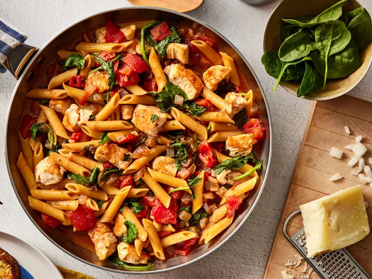

One-Pan Tomato & Spinach Chicken Pasta

A simple but delicious One-Pan Tomato & Spinach Chicken Pasta recipe
An easy to follow and relatively quick recipe for a One-Pan Tomato & Spinach Chicken Pasta. This is a delicious meal definetly worth making.
Ingredients
- 10 ounces boneless skinless chicken breasts, cut into 1 inch pieces
- 1 tablespoon olive oil
- 1 medium onion, chopped
- ¼ cup red wine
- 1 (14.5 ounce) can diced tomatoes with basil, garlic, and oregano, undrained
- 1 cup Swanson® Chicken Broth
- 4 ounces uncooked penne pasta
- ¾ cup water
- 4 cups baby spinach
Directions
- Season the chicken as desired. Heat the oil in a 12-inch skillet over medium-high heat. Add the chicken and cook until well browned, stirring often. Remove the chicken from the skillet.
- Add the onion to the skillet and cook until tender-crisp, stirring occasionally. Add the wine and heat to a boil, stirring to scrape up any browned bits from the bottom of the skillet.
- Stir in the tomatoes, Swanson Chicken Broth, penne, and water; heat to a boil. Reduce the heat to medium. Cook for 10 minutes or until the penne is tender, stirring occasionally. Return the chicken to the skillet. Cook for 2 minutes or until the chicken is cooked through. Stir in the spinach and cook for 1 minute or until the spinach is wilted.